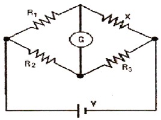
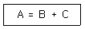
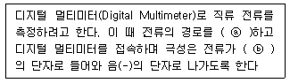

의료전자기능사 (2012-04-08 기출문제)
1과목: 임의 구분
1. 첨단 의공학 분야에 대한 설명으로 가장 옳은 것은?
- 지능형 로봇을 이용한 수술 방법이 개발되고 있음
- 나노 기술이 적용되기에는 생체 분자의 크기가 너무 작아 성공적이지 못했음
- 반도체 기술은 생체 적합성 및 안정성 문제로 인하여 생체에 적용되지 못함
- 원격지의 의사가 진료와 처방을 내리는 약물전달시스템이 상용화되었음
(정답률: 76%)

2. 다음 중 심음(heart sound)을 듣기 위해 필요한 것은?
- 심전도(ECG)기록기
- 청진기(stethoscopes)
- 심박 제세동기(defibrillator)
- 심박조율기(cardiac pacemaker)
(정답률: 83%)
3. 전자유량계는 다음 중 어떤 법칙과 관련이 깊은가?
- 패러데이 법칙
- 플레밍의 법칙
- 비오 사바르의 법칙
- 렌츠의 법칙
(정답률: 67%)
4. 인체의 호흡 작용 중에서 최대한으로 숨을 들이마신 후에 최대한으로 내쉴 수 있는 공기의 양을 말하며, 1회 호흡 용적과 흡기예비용적에 호기예비용적을 합한값을 뜻하는 공기용량을 무엇이라고 하는가?
- 기능적 잔기용량
- 폐활량
- 총폐활량
- 강제폐활량
(정답률: 64%)
5. 단백질, 탄수화물, 지방을 소화시키기 위한 효소들 을 포함하고 있는 기관은?
- 비장
- 간
- 췌장
- 위
(정답률: 70%)
6. 심장의 심실 수축기에 들리는 소리로 주로 방실판막이 닫힐 때 나는 심음은?
- 제 1 심음
- 제 2 심음
- 제 3 심음
- 제 4 심음
(정답률: 56%)
7. 개별(discrete)소자를 사용하여 생체계측증폭회로를 제작하는 것과 비교하여 연산증폭기를 사용하는 특징이 아닌 것은?
- 낮은 신뢰성
- 회로의 간소화
- 장치의 소형화
- 비용의 감소
(정답률: 77%)
8. 신체의 움직임을 나타내는 용어 중 관절을 이루고 있는 두 뼈 사이의 각도가 해부학적 자세에서 시상단면을 따라 굽혀져 각이 작아지는 운동 상태를 무엇이라고 하는가?
- 굽힘(flexion)
- 폄(extension)
- 젖힘(hyperextension)
- 벌림(abduction)
(정답률: 85%)
9. 다음 중 이상적인 연산증폭기의 특성으로 옳지 않은 것은?
- 증폭도 ∞
- 입력임피던스 ∞
- 대역폭 ∞
- 출력임피던스 ∞
(정답률: 66%)
10. 이마뼈, 마루뼈, 어깨뼈, 갈비뼈 등은 넓고 편평한 얇은 뼈이다. 이러한 뼈는 어떤 뼈에 속하는가?
- 긴뼈
- 짧은뼈
- 납작뼈
- 불규칙뼈
(정답률: 79%)
11. 혈압과 관련된 것이 아닌 것은?
- 수축기혈압
- 이완기혈압
- 평균혈압
- 압맥파
(정답률: 83%)
12. 심전도 측정 방법에 대한 설명으로 옳지 않은 것은?
- 측정시 움직이지 않는다.
- 일회용 전극은 재사용하지 않는다.
- 전극의 부착 부분을 사전에 깨끗이 한다.
- 전극의 전해질을 충분히 건조시키고 사용한다.
(정답률: 77%)
13. 다음 중 세포의 활동전압에 대한 설명이 아닌 것은?
- 역치 이하의 저분극에서 발생되는 전압이다.
- 신경, 근육세포에서 먼 거리까지 정보를 빨리 전달하는 역할을 한다.
- 신경세포, 근육세포, 감각세포, 분비세포 등 세포막에서 발생하는 것이다.
- 효과기 반응의 조절, 근육수축, 신경전달 물질과 호르몬의 분비 등과 같은 역할을 한다.
(정답률: 58%)
14. 다음 중 생체신호 계측기기에 필요한 특성이 아닌 것은?
- 정확성
- 재현성
- 정밀성
- 표류성
(정답률: 78%)
15. 200[Hz]의 아날로그 신호의 주기는?
- 1[ms]
- 5[ms]
- 10[ms]
- 20[ms]
(정답률: 78%)
16. 호흡기 기능평가법의 평가기능과 해설이 옳게 연결된 것은?
- 환기능 - 폐 내에서 공기가 폐포간에 균형 있게 분포하는 기능
- 분포능 - 외부공기가 기도를 통하여 폐포로 잘 전달되는 기능
- 확산능 - 폐포 내 공기와 폐 모세혈관 내 혈액 간에 O2, CO2를 잘 교환하는 기능
- 피폭능 - 폐 내에서 방사선이 모세혈관으로 전달되는 기능
(정답률: 57%)
17. 혈압측정 방법 중 직접측정법에 대한 설명이 아닌 것은?
- 혈관 내로 카테터를 삽입한 후 변환장치에 연결하여 측정하는 방법이다.
- 혈압을 실시간으로 계측기 가능하다.
- 말단(팔) 부위에 압박주머니를 부착한 후 압력을 증가시킨다.
- 카테터에 스트레인 게이지 타입의 압력센서를 연결하여 혈압 파형을 계측한다.
(정답률: 59%)
18. 다음 중 세포막을 구성하고 있는 주요 성분은?
- 탄수화물과 섬유소
- 단백질과 지질
- 단백질과 탄수화물
- 지질과 탄수화물
(정답률: 71%)
19. 심장이 비정상적으로 느리게 박동하는 경우 심장에 주기적 전기 펄스를 보내는 전기자극기를 무엇이라 부르는가?
- 뇌전도(EEG) 기록기
- 심박조율기
- 제세동기
- 초음파 주사 촬영기
(정답률: 61%)
20. 다음 생체신호에 대한 설명 중 옳지 않은 것은?
- 생체는 전기를 발생시키는 무수한 세포들을 가지고 있다.
- 생체 내에 존재하는 신경, 근육들의 전기화학적 작용에 의해 만들어진다.
- 심전도, 뇌전도 등이 대표적인 예이다.
- 혈압, 체온, 호흡 등도 전기적인 신호로 구분한다.
(정답률: 60%)
2과목: 임의 구분
21. 정공이 소수 캐리어인 반도체의 종류는?
- 순수 반도체
- 외인성 반도체
- n형 반도체
- p형 반도체
(정답률: 70%)
22. 다음 중 미터법 접두 기호와 그에 해당하는 십의 승수 값이 올바른 것은?
- 밀리(m) : 10-2
- 마이크로(μ) : 10-6
- 킬로(k) : 106
- 기가(G) : 1012
(정답률: 73%)
23. 빠른 진행현상이나 과도현상이 관측 및 파형의 분석 등을 할 수 있는 장치로 전자계측 분야에 많이 사용되고 있는 계측장비는?
- 가동코일형 계기
- 가동철편형 계기
- 오실로스코프
- 유도형 계기
(정답률: 73%)
24. 다음 중 진성 반도체의 특성으로 옳은 것은?
- 온도가 상승하면 저항이 증가한다.
- 진성 반도체에 불순물을 섞으면 저항이 증가한다.
- 전기적 전도성은 도체와 부도체의 상위 정도이다.
- 온도가 절대온도 0도 정도의 낮은 상태에서는 절연체가 된다.
(정답률: 58%)
25. 기어의 바깥지름의 크기에 따른 분류 중 옳은 것은?
- 소형 기어 : 10mm 이하
- 중형 기어 : 10~20mm
- 대형 기어 : 40~200mm
- 극대형 기어 : 1000mm 이상
(정답률: 61%)
26. 다음 회로에서 미지의 저항 X의 값은 얼마인가? (단, R1=10[Ω], R2=100[Ω], R3=20[Ω], V=10[V], 검류계 G에는 전류가 흐르지 않는다.)

- 1[Ω]
- 2[Ω]
- 10[Ω]
- 100[Ω]
(정답률: 75%)
27. 발광 다이오드의 역 현상을 이용한 것으로 광통신의 수광 소자로 사용되면, 광 신호를 전기 신호로 바꾸는 광 검출기 등에 사용되는 다이오드는?
- 터널 다이오드
- 포토 다이오드
- 제너 다이오드
- 바랙터 다이오드
(정답률: 63%)
28. 다음 나사의 종류와 쓰임새가 옳지 않은 것은?
- 3각나사 : 일반결합용
- 4각나사 : 힘의 전달용
- 사다리꼴나사 : 운동전달용
- 둥근나사 : 마찰감소용
(정답률: 48%)
29. 전원을 일정하게 유지하여 전압의 안정을 위하여 사용하는 다이오드는?
- 터널 다이오드
- 발광 다이오드
- 바랙터 다이오드
- 제너 다이오드
(정답률: 70%)
30. 트랜지스터(Tr)의 3개의 단자 이름이 아닌 것은?
- 캐소드(cathode)
- 컬렉터(collector)
- 베이스(base)
- 이미터(emitter)
(정답률: 74%)
31. 다음 중 P형 반도체의 3가 원소로 옳은 것은?
- As(비소)
- P(인)
- B(붕소)
- Sb(안티몬)
(정답률: 62%)
32. 생체 전기 신호 측정과 관련하여 이온에 의한 전류를 자유전자에 의한 전류로 변환해주는 것은?
- 전극
- 기억소자
- 증폭기
- 압전소자
(정답률: 56%)
33. 다음 식이 나타내는 논리 게이트는?

- AND
- OR
- NOT
- NOR
(정답률: 66%)
34. 전기적 신호를 가하면 변형에 의한 진동이 생기고 변형을 주변 전기적 신호가 생기는 물질을 이용한 센서를 무엇이라 하는가?
- 유도성 센서
- 용량성 센서
- 압전 센서
- 온도 센서
(정답률: 63%)
35. 전기력선의 특징에 대한 설명으로 옳지 않은 것은?
- 도체 내부에 전기력선이 존재한다.
- 전기력선은 도체표면에서 직각으로 지나간다.
- 전기력선은 전위가 높은 곳에서 낮은 곳으로 향한다.
- 전기력선은 + 전하에서 시작해서 - 전하에서 끝난다.
(정답률: 46%)
36. 온도에 따른 용량변화가 적고 절연저항이 높으며 고주파까지 사용가능하고 소용량 콘덴서로 보통 측정에서 표준기로 사용되는 콘덴서는?
- 운모 콘덴서
- 세라믹 콘덴서
- 적층 콘덴서
- 전해 콘덴서
(정답률: 53%)
37. 동력을 전달시키는 기계요소와 가장 거리가 먼 것은?
- 마찰차
- 체인과 스프로킷 휠
- 나사
- 벨트
(정답률: 71%)
38. 다음 중 ⓐ와 ⓑ에 들어갈 알맞은 용어는?

- ⓐ개방, ⓑ양(+)
- ⓐ개방, ⓑ음(-)
- ⓐ단락, ⓑ양(+)
- ⓐ단락, ⓑ음(-)
(정답률: 70%)
39. 정류회로의 종류 중에서 하나의 정류다이오드와 교류전원 부하저항이 연결되어 구성되는 회로로 입력 교류전압의 양(+)의 반주기 동안은 다이오드가 도통되어 출력이 나타나고 음(-)의 반주기는 출력이 없는 회로의 명칭은?
- 반파정류회로
- 전파정류회로
- 브리지정류회로
- 정전압조정회로
(정답률: 64%)
40. 에너지 대역 중 전자가 가득 찬 영역은?
- 전도대
- 충만대
- 허용대
- 금지대
(정답률: 74%)
3과목: 임의 구분
41. 의료기관이 실시하는 가정간호의 범위가 아닌 것은?
- 수술
- 검체의 채취
- 투약
- 주사
(정답률: 74%)
42. 다음 중 적외선 체열진단기의 구성 요소로 맞지 않는 것은?
- 발광부
- 스캔 집광부
- 적외선검출기
- 스캔 검출계
(정답률: 51%)
43. 다음 중 연성내시경(flexible endoscope)의 구성요소가 아닌 것은?
- CCD
- 광원
- 안테나
- 유리섬유
(정답률: 68%)
44. 중환자실 등에 이용되는 수액펌프의 주된 목적은?
- 수압을 낮추기 위해서
- 체온을 유지하기 위해서
- 혈액순환을 돕기 위해서
- 정확한 수액을 제어하기 위해서
(정답률: 67%)
45. 다음 중 의료기기에 의한 장애 형태로 볼 수 없는 것은?
- 유해물질, 병원체의 오염으로 인하 세균감염
- 조직에서의 저항성 발열로 인한 수분부족 현상
- 기기로부터 방출된 에너지로 인한 X-레이 감염
- 성능의 열화, 동작의 불량으로 기기의 파손
(정답률: 64%)
46. 생체계측장치가 아닌 것은?
- 심전계
- 근전계
- 초음파 진단장치
- 혈압계
(정답률: 66%)
47. 방사선 관계자 이외의 자가 거주하는 쪽에 설치된 방어벽의 외부에서 측정한 방사선 산란선량 및 누설선량의 합계는 주당 얼마 이하어야 하는가?
- 2.58 × 10-5[C/kg]
- 2.58 × 10-6[C/kg]
- 3.58 × 10-5[C/kg]
- 3.58 × 10-6[C/kg]
(정답률: 67%)
48. 다음 중 컴파일(compile) 방식의 언어가 아닌 것은?
- FORTRAN
- C
- BASIC
- PASCAL
(정답률: 59%)
49. X선 장치에 컴퓨터를 조합시켜 생체의 단층을 촬영하는 영상기술은?
- 자기공명 단층촬영장치(MRI, Magnetic Resonance Image)
- CT 촬영장치(Computed Tomography)
- X선 촬영장치
- PACS(영상저장 전송시스템)
(정답률: 59%)
50. 인공관절의 마모에 의해 미립자가 떨어져 나와 생체반응을 일으킴으로써 점차 뼈가 녹아내리고 고정 면이 느슨해지는 현상은?
- 골흡수 현상
- 마찰계수저하 현상
- 골마모 현상
- 골해리 현상
(정답률: 60%)
51. 환자의 진료, 의학교육, 의학연구 및 의료경영에 필요한 각종의 정보를 효율적으로 체계화하여 관리하는 학문은?
- 재택진료학
- 원격의료학
- 의료정보학
- 의료영상학
(정답률: 78%)
52. 환자 환경 2.5[m] 이내의 범위에는 적어도10[mV] 이상의 전위차가 발생하면 안 된다. 인체의 저항을 1[㏀]이라고 가정하였을 경우, 전류는 어느 정도 이상 흐르면 안 되는가?
- 1[㎃]
- 1[㎂]
- 10[㎃]
- 10[㎂]
(정답률: 47%)
53. 다음 중 플립플롭(Flip-Flop)의 종류에 해당되지 않는 것은?
- JK형
- T형
- D형
- RR형
(정답률: 73%)
54. 다음 중 인체에 접촉하여 인체에 삽입된 상태에서 외부와 연결되는 의료기기를 나타내는 것은?
- 체내 이식형 의료기기
- 체내∙외 연결형 의료기기
- 비접촉형 의료기기
- 표면접촉형 의료기기
(정답률: 67%)
55. 다음 중 운영체제가 아닌 것은?
- Workstation
- UNIX
- Windows
- MS-DOS
(정답률: 78%)
56. 병원정보시스템(HIS)의 가장 핵심이 되는 부분으로 서 병원을 찾아오는 환자를 중심으로 일어나는 일련의 흐름을 전산화 한 것을 무엇이라 하는가?
- 처방전달시스템(OCS)
- 사무자동화(OA)
- 영상정보
- 경영지원
(정답률: 69%)
57. 제세동기의 구성요소가 아닌 것은?
- 전원부
- 전극
- 심전도 모니터부
- 산화기(oxygenator)
(정답률: 72%)
58. 프로그래밍 단계 중 순서도의 작성은 언제 하는가?
- 타당성 조사 후
- 프로그램 코딩 후
- 입∙출력 설계 후
- 자료 입력 후
(정답률: 62%)
59. 의료법상 의료기관에 해당하는 것만 나열한 것은?
- 접골원, 보건소
- 종합병원, 치과병원
- 보건소, 안마시술소
- 치과병원, 접골원
(정답률: 81%)
60. 주로 중환자실, 신생아실, 분만실이나 회복실에서 사용하는 기기로서 환자의 심전도, 혈압, 호흡, 체온, 혈중산소포화농도 등을 수치나 파형으로 나타내는 기기는?
- 분만감시장치
- 심전계
- 뇌전계
- 환자감시장치
(정답률: 71%)